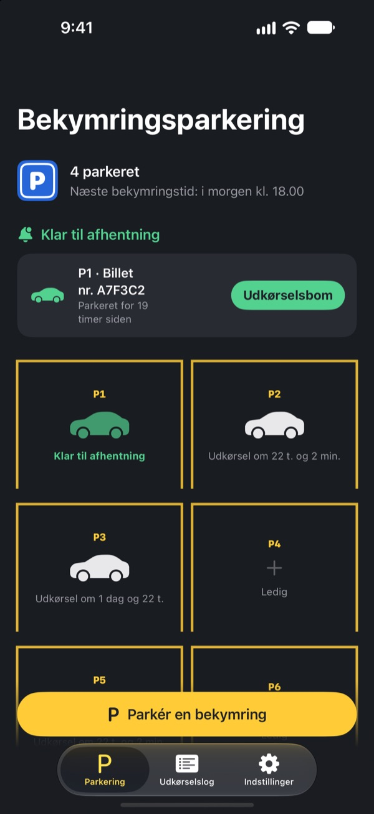
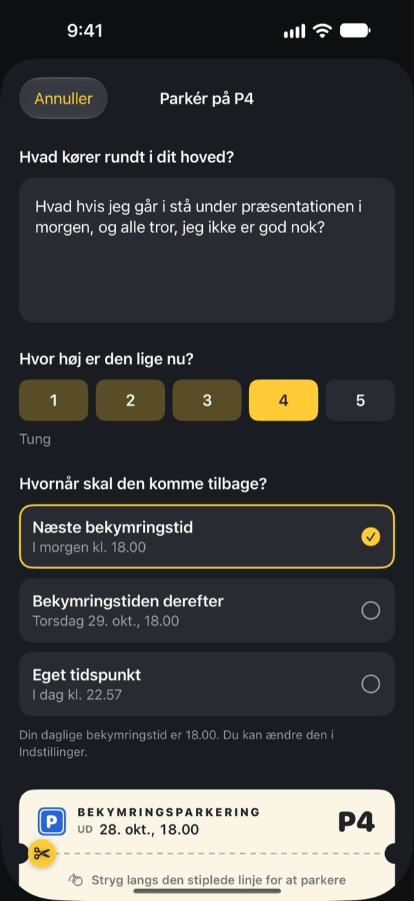
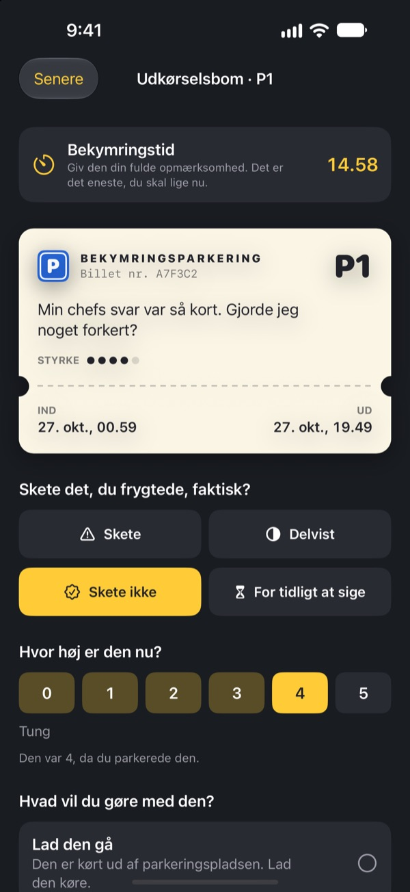
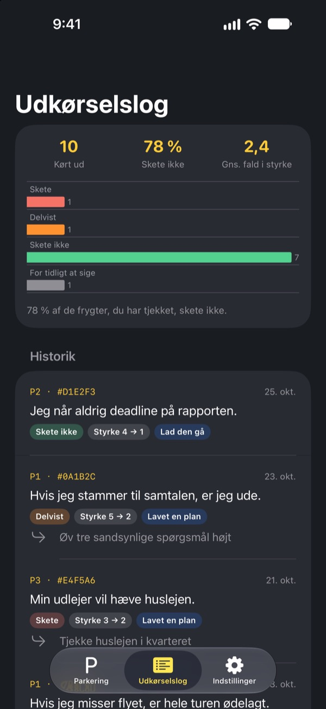

Parkér bekymringen.
Hent den senere.
Skriv det ned, der kører rundt i hovedet ved sengetid, og efterlad det på en parkeringsbillet. Du får det tilbage i din bekymringstid. Indtil da behøver du ikke slæbe rundt på det.
Alle funktioner er gratis. Ingen reklamer, ingen konto.

Parkér en bekymring
Behold eksemplet, eller skriv det, der fylder lige nu. Når den er parkeret, bliver den sløret, og i bekymringstiden tager du den frem igen.
Lyset slukket, hovedet tændt?
Så snart hovedet rammer puden, går det i gang: noget, du sagde i dag, mødet i morgen, beskeden, der stadig ikke er svaret på. Jo mere du prøver ikke at tænke på det, jo højere larmer det. Bekymringsparkering beder dig ikke skubbe bekymringen væk. Du skriver den ned, giver den en plads og sætter tid af til at tage dig af den.
Skrevet ned er ude af hovedet
Skriv den, præcis som den lyder i dit hoved, og angiv, hvor høj den er lige nu, fra 1 til 5. Riv billetten af, så står bekymringen sløret tilbage på parkeringen.
Kører den ind i hovedet igen, så sig til den: du har allerede en plads. Din tid kommer, men ikke nu.

15 minutter i bekymringstiden
Hver dag i din bekymringstid får du en påmindelse. Ved udkørselsbommen læser du bekymringen igen og tjekker, om den faktisk skete, og hvor høj den er nu.
Så giver du slip, gør den til et lille næste skridt eller parkerer den til næste bekymringstid.

Se, hvor tit dine bekymringer fik ret
Jo flere bekymringer der er kørt ud, jo tydeligere viser udkørselsloggen, hvor mange der faktisk skete, og hvor meget de faldt i styrke.
Bekymringer maler ofte fremtiden værre, end den bliver. Jo mere du logger, jo mindre tror du på den næste.

Kom i gang på tre trin
- 1
Vælg din bekymringstid
Første gang du åbner appen, vælger du, hvornår du hver dag tager dig af dine bekymringer. Du kan ændre det senere i Indstillinger.
- 2
Parkér en rigtig bekymring
Parkér med det samme noget, der fylder, og mærk, hvordan styrken ændrer sig før og efter.
- 3
Tillad afhentningspåmindelser
I bekymringstiden får du en påmindelse med kun pladsnummeret.
Derfor virker det
- Bekymr dig kun på et fast tidspunkt
- Folk, der flyttede deres bekymringer til en kort daglig stund, bekymrede sig mindre og oplevede mindre angst og færre søvnproblemer. (Borkovec m.fl., 1983; McGowan & Behar, 2013)
- Skriv ned for at give slip
- En konkret plan holdt uafsluttede opgaver ude af tankerne, og fem minutters skrivning før sengetid fik folk til at falde hurtigere i søvn. (Masicampo & Baumeister, 2011; Scullin m.fl., 2018)
- Tjek, hvad der faktisk skete
- Da personer med kronisk bekymring loggede deres bekymringer, skete 91 % af dem aldrig. (LaFreniere & Newman, 2020)
Bekymringsparkering bygger på udskydelse af bekymringer, en teknik fra kognitiv adfærdsterapi (KAT), der er blevet forsket i i årtier.
Alt er gratis
Gratis
- Ubegrænset antal parkeringspladser
- Daglige påmindelser i bekymringstiden og selvvalgt udkørselstid
- Udkørselsbom og udkørselslog
- Indsigt i udkørsler: hvor mange der skete, og hvor meget styrken faldt
Drikkepenge, hvis du vil
- Hvis appen hjælper, kan du give udvikleren lidt drikkepenge
- Lille, mellem eller stor, som du vil
Drikkepenge låser ikke op for noget. Uden virker alt på samme måde.
Ingen reklamer, ingen konto, ingen servere, ingen analyseværktøjer. Alt, hvad du skriver, bliver på din iPhone.
Ofte stillede spørgsmål
Hvordan ændrer jeg min bekymringstid?
Under Bekymringstid på fanen Indstillinger. Det nye tidspunkt gælder for bekymringer, du parkerer derefter. Bekymringer, der allerede holder parkeret, beholder deres oprindelige udkørselstid.
Jeg får ingen afhentningspåmindelser.
Tjek Notifikationer på fanen Indstillinger. Er de slået fra, så tryk på Åbn indstillinger i iOS og slå dem til. Med fokus eller Forstyr ikke slået til kan påmindelser komme lydløst. Selv uden påmindelse vises bekymringer, hvis tid er kommet, som klar til afhentning på parkeringen.
Står min bekymring i notifikationen?
Nej. Notifikationer viser kun pladsnummeret, fx ”P3 er klar til afhentning”. Selve bekymringen ser du først, når du åbner appen og går til udkørselsbommen.
Kan jeg se en bekymring før bekymringstiden?
Tryk på dens bil på parkeringen, og vælg Send den til udkørselsbommen nu. Udskydelse virker dog bedst, når du venter. De fleste bekymringer føles mindre, når bekymringstiden kommer.
Kan jeg flytte min log til en ny iPhone?
Alt gemmes kun på din iPhone, uden konto eller synkronisering. Gendanner du en ny iPhone fra en sikkerhedskopi i iCloud eller på computeren, eller bruger du Hurtig start, følger loggen med sammen med dine andre apps.
Hvordan sletter jeg min log?
Stryg en post til venstre på fanen Udkørselslog for at slette den. Sletter du appen, forsvinder alt.
Er det her behandling?
Bekymringsparkering er et selvhjælpsværktøj, der bygger på udskydelse af bekymringer fra KAT. Det er ikke medicinsk udstyr og erstatter ikke professionel diagnose eller behandling.
Hvad hvis jeg har det rigtig svært?
Hvis bekymringerne tager over, eller du tænker på at gøre skade på dig selv, så bær det ikke alene. Ved akut fare i Danmark ring 112. Du kan også ringe til Livslinien på 70 201 201.
Spørgsmål eller idéer? Skriv til leeo@kakao.com.